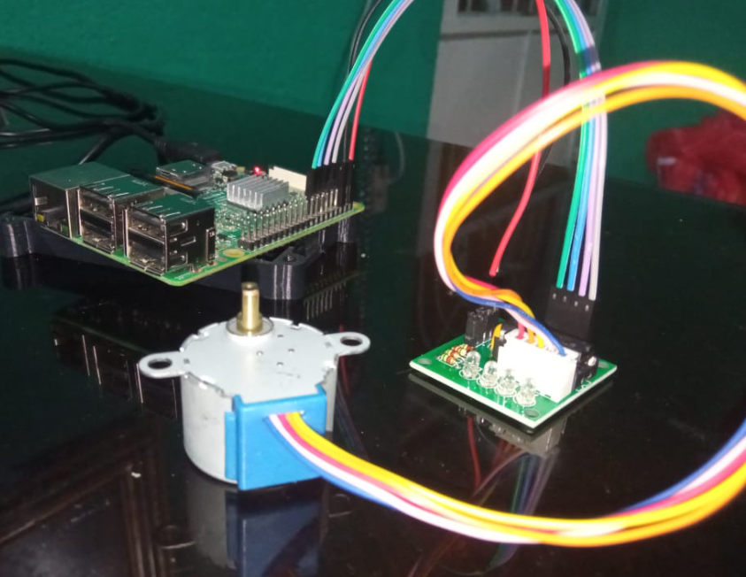

El código funciona de tal manera que te pregunta que tantos valores quieres para el movimiento, que si el giro, la velocidad y la dirección, el motor funciona bien en el raspberry pi3, pero si es posible es mejor opción usar una fuente de energía externa
import RPi.GPIO as GPIO
import time
GPIO.setwarnings(False)
GPIO.setmode(GPIO.BOARD)
ControlPin = [7, 11, 13, 15]
for pin in ControlPin:
GPIO.setup(pin, GPIO.OUT)
GPIO.output(pin, False)
step_seq_num = 0
rot_spd = 0.002
rotate = 4096
rotate_dir = 1
seq = [
[1, 0, 0, 0],
[1, 1, 0, 0],
[0, 1, 0, 0],
[0, 1, 1, 0],
[0, 0, 1, 0],
[0, 0, 1, 1],
[1, 0, 0, 1],
]
rotateF = float(input("Enter revolutions (0.000041+): "))
rotate_dir = int(input("Enter direction (1CW/-1CCW): "))
rot_spd = float(input("Enter speed (1-0.001): "))
rotate = int(rotateF * 4096)
if rotate < 1:
rotate = 4096
Realizado por Christopher Eduardo Barrientos Guerra